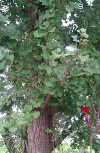
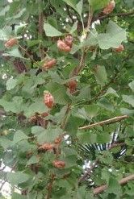
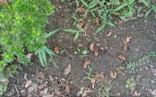
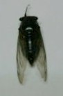
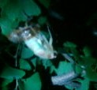
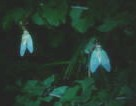

たまたま通りかかった某公園、すごいセミ時雨。（なんとまぁ、にぎやか...）と思いながら眺めていると、その中の銀杏の枝に、空蝉（セミの抜け殻）が何匹も張り付いているよう。

近寄って眺めてみると、その木の或る枝に抜け殻が集中してた(゜０゜） 中には他の抜け殻におんぶ状態の抜け殻まである。いや、これはすごいわ。

周りの他の木も眺めてみると そちらの枝にもそこかしこに抜け殻がとりついていたが、最初の木ほどではない。銀杏の枝はいっぱいあるのに、なんでこの枝にばかり集中しているんだろうと不思議に思った。
アリが行列を作ったり 自分の巣と他の巣を間違えないのは固有のフェロモンを出しているからだそうな。ひょっとすると、セミの幼虫も族特有のフェロモンを発散させているのかも。
下を見ると、そこにも抜け殻が散乱していた。

近くでクマゼミを見つけた。クマゼミなんて子供の時以来 お目にかかっていない。これは珍しいとゲットしてきた。(^-^；)

子供の時、セミの脱皮を観察したことがある。それを思い出して、夜になってから同じ公園へ車で出かけた。あの銀杏の木を懐中電灯で照らして見ると、やはり何匹かのアブラゼミの幼虫が脱皮のまっ最中（Ａは仰向けに上半身だけ抜け出た状態 Ｂは完全に抜け出て、成熟待ちの状態）。
Ａ  Ｂ 
いや、日本の自然は まだ大丈夫なようで(^-^；
|